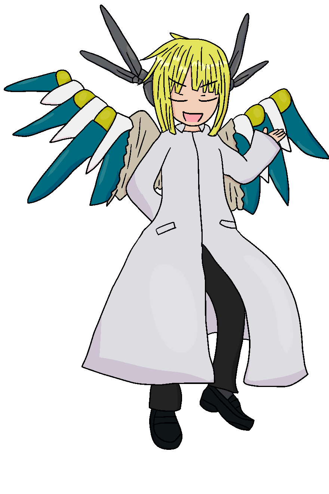

『審判の国』には、生まれつき強い力を持って生まれる者がいる。
エンジェル・ヘイロゥも翼も、全員が持っているわけではない。
両方を持ったものを、『天使』と呼ぶ。
そう生まれたものたちは、幼いころから教育を受ける。
『天使』として十全に働くために。
役割に疑問を抱かないために。
持てるポテンシャルを最大限に発揮するために。
ヴァーディクトは天使として生まれた。
天使の中にも個体差があり、
ヴァーディクトは個体としての能力は非常に高い方であった。
ただし、問題点がいくつか――皆様もご存知の通り。
下界に降りる時間が短い任務にあてがわれているうちは、
そう妙なことにはならなかった。
ヴァーディクトが仕事に慣れ、
重要性の高い任務を与えられ、
単独任務を与えられ。
そのあたりから、彼はだんだんおかしくなっていった……とは、特に親しかった友人の弁。
ヴァーディクト
名前：ヴァーディクト青年ほどの年齢に見える、自称元天使。
年齢：25前後
性別：男性格
身長：180cm
種族：元天使
性格：かるい
むね：好き
職業：放浪者
好き：いろはちゃん
嫌い：融通の効かないもの
出身：審判の国
出演作品：Supernal Blue 試遊会
天使の輪の代わりに頭部にはアンテナがついており、
背中の羽は途中で両断されていて、その先には機械の翼がついている。
自由人を名乗るが、実態は普通に無職。放浪の旅。
人間（型の生き物）が好き。特に女の子。
審判の国において、評決を意味する名を持つ天使であった。
その国の性質上、突出する者・多数から外れる者は忌み嫌われる。
彼はまさにそれに当てはまる存在であり、
本来良い顔で見られないような人間に寄り添うことを何度も行ったり、
あるいは事情を鑑みて庇いたてするようなことを続けた結果追放された。
天使を名乗りながら、エンジェル・ヘイロゥ（天使の輪）がなかったり、
翼がツギハギなのはそのためである。
ちぎれたままだと見目が悪いので、
放浪の旅の途中で出会った技師にバランスが取りやすいような
アタッチメントをつけてもらった。空は飛べない。
人間を好むだけならまだよかったのだが、
女の子に対する態度が悪かった……とは、
彼を知る他の天使の話だとかなんとか。
それは種族や年齢を超えたものだった。
Supernal Blue 試遊会にていろはちゃん（よその子）と出会い、意気投合。
エンジェル・ヘイロゥを失った結果、己が今までのように
女の子と一線を引いた（多くの場合捨てるのを前提とした）付き合いができなくなっているのを自覚。
そして、何よりも彼女のことが好きになったことに気づき、共に下界を歩むこととなった。
―――エンジェル・ヘイロゥ。
それは、天使の証の一つとされている。
原初の天使の『素体』から、
引き継がれてきた生来の強化部位。
『人間的』な感情を薄れさせ、
その他任務遂行能力―五感や身体能力―
を、大きく高める部位。
しかし、稀にイレギュラーが発生することが知られている。
主な症状は感情制御機能のエラーが多数を占める。
この場合、エンジェル・ヘイロゥ及び翼を回収し、
テンプレートの国へ送る措置を取ること。
分析・改良のためのサンプルにより、エンジェル・ヘイロゥの精度が上昇する。
なお、回収後の個体は下界へ追放すること。
地上民と同じ立場に堕とすこそが、
一番の罰である。
――審判の国、とある資料より抜粋
外部の国からの依頼に応じて、
『罪人』と認定されたものを捕縛・戦闘することを主な役割にする者で構成された
戦闘集団。
ヴァーディクトはある時期にその行為に疑問を抱いた結果、この様になっている。
{kind=link}